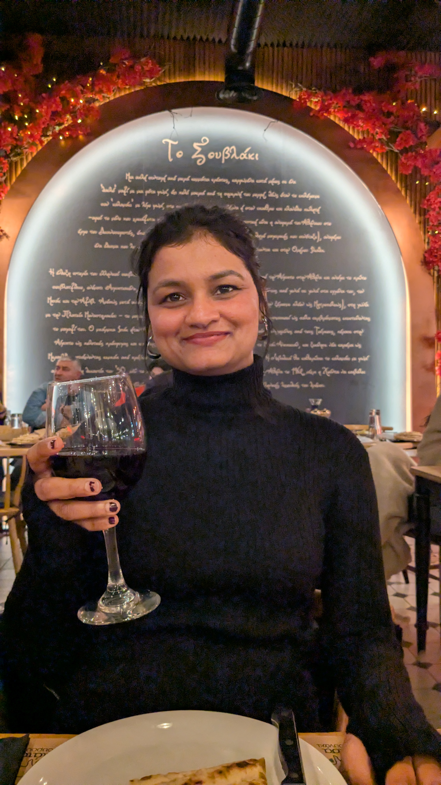
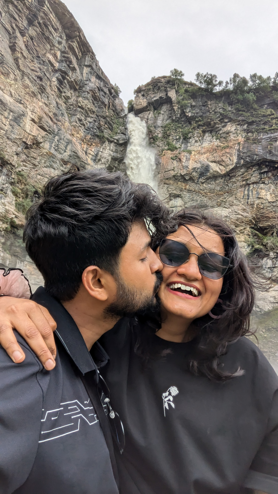
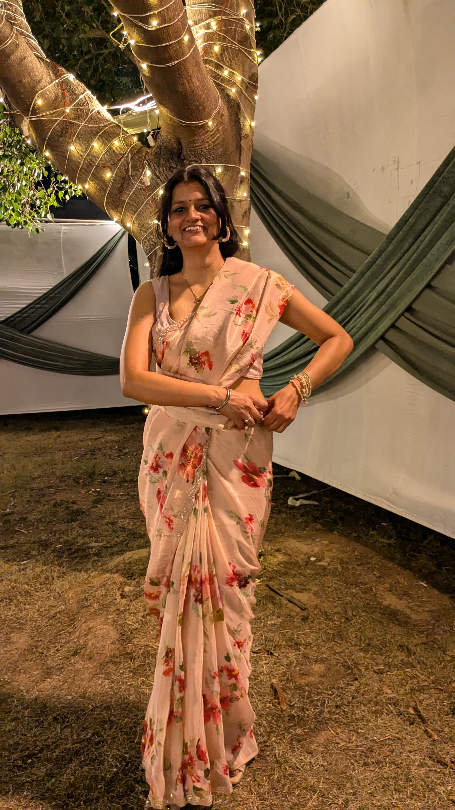
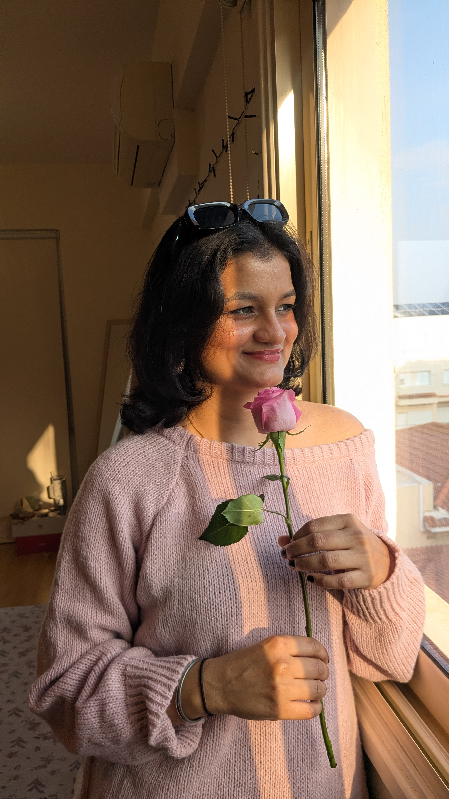

Happy Kiss Day 💋

Counting the days...

One kiss closer to forever.

Distance is just a test to see how far love can travel.

You’re my favorite person to miss.

Just a little something to remind you how much you're loved.

Saving all my real-life kisses for when I finally see you.
← Back to Home